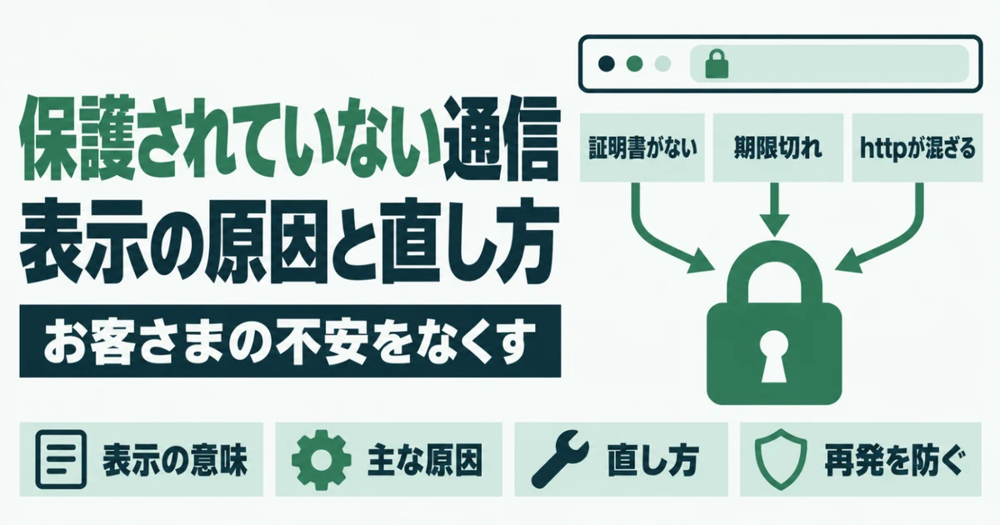
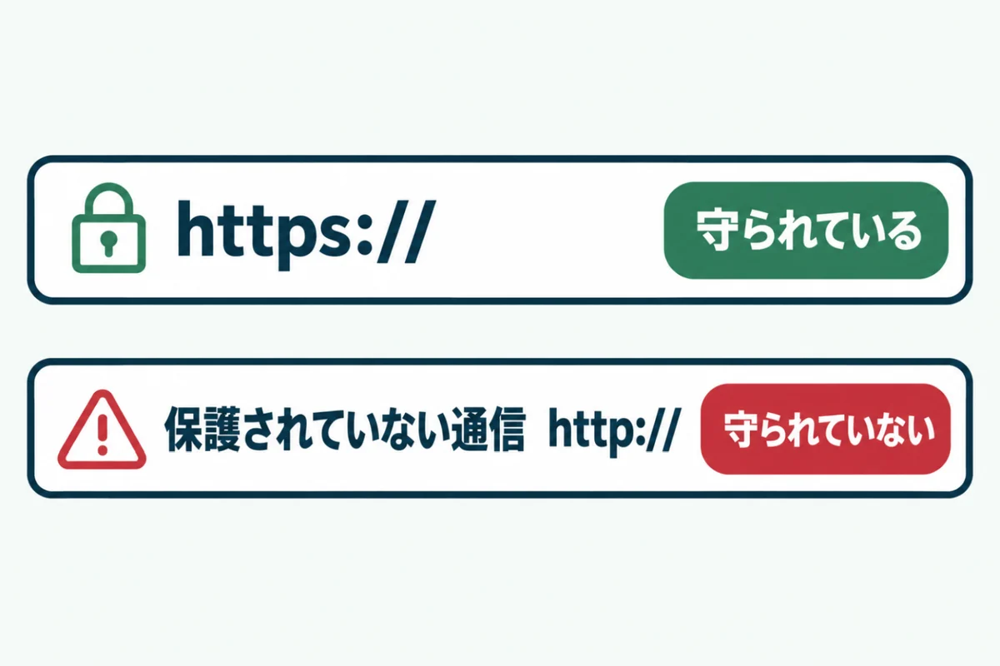
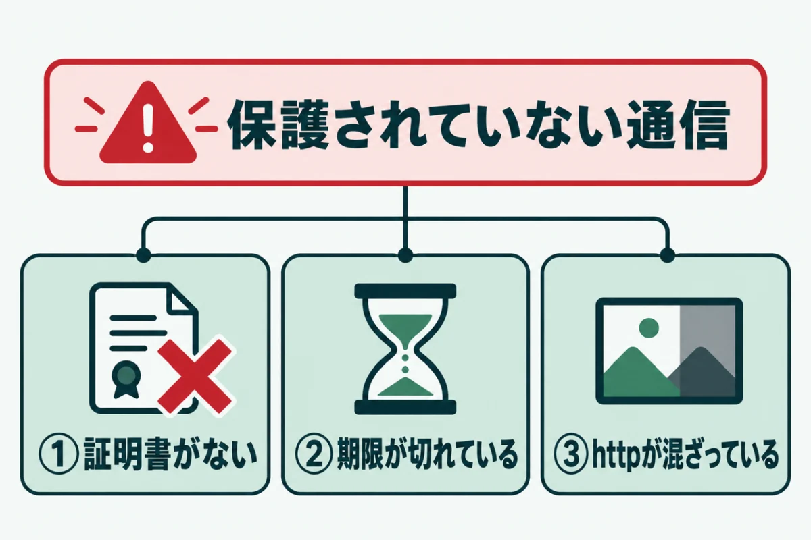
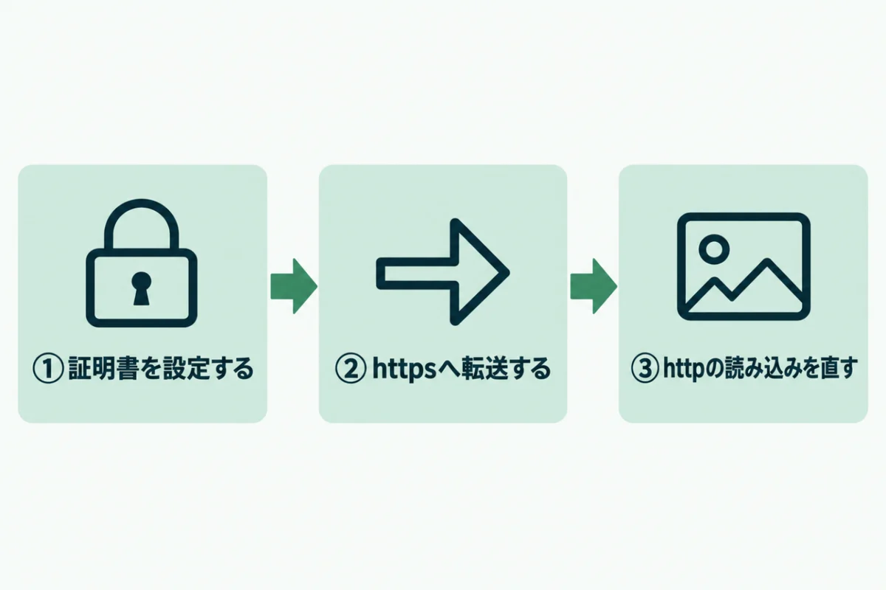
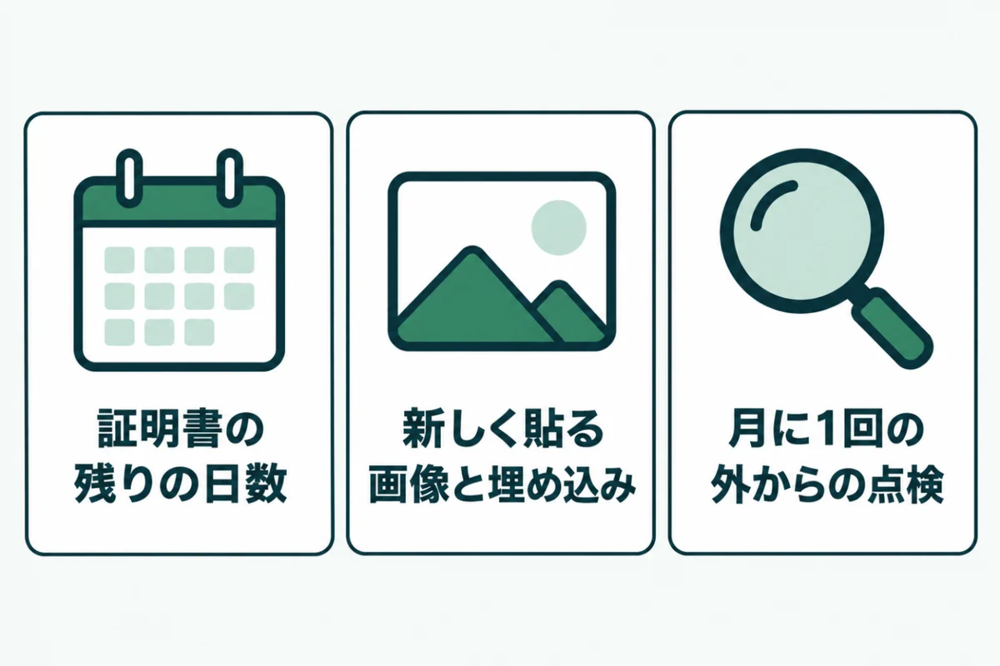

「保護されていない通信」と表示される原因と直し方
SSL・ドメイン・メール

自社のサイトを開いたら、アドレス欄に「保護されていない通信」と出て驚いたことはありませんか？
お客さまから「このサイトは大丈夫ですか」と聞かれて、初めて気づく方も少なくありません。
この記事では、保護されていない通信と表示される原因と直し方を紹介します。原因ごとの確かめ方と、同じ表示を出さないための備えもまとめました。
ホームページの管理を任されている方が、自分で原因を切り分けられるようになる内容です。
「保護されていない通信」と表示される意味

「保護されていない通信」は、サイトとの通信が暗号化されていないことを知らせる表示です。ブラウザが閲覧者に注意を促している状態だと考えてください。
この表示が出ても、すぐにサイトが乗っ取られているわけではありません。ただし、お客さまの目には「危ないサイト」と映ります。意味を正しく知ったうえで、早めに直しましょう。
通信が暗号化されていないという知らせ
アドレスが「https」で始まるサイトは、閲覧者とサイトの間の通信が暗号化されています。「http」のままだと、途中で中身を盗み見られたり書き換えられたりするおそれがあります。
Chromeなどのブラウザでは、httpのページを開くと「保護されていない通信」と出る仕組みです。問い合わせフォームの入力内容も守られないため、名前や電話番号を送るページでは特に問題になります。
お客さまと検索に与える影響
表示を見たお客さまは、問い合わせや購入をためらうでしょう。せっかく見に来てくれた人が、何もせずに離れる原因になります。
検索の面でも、Googleはhttpsのページを評価の要素の1つにしています。信用と集客の両方で損をしている状態なので、後回しにせず直しましょう。広告を出している場合は、費用をかけて集めた人を逃すことにもなります。
「保護されていない通信」と表示される3つの主な原因

「保護されていない通信」と表示される原因は、主に3つです。どれに当たるかで、このあとに直す場所が変わってきます。
まずはアドレス欄の表示と、アドレスが「http」か「https」かを確かめてください。トップページだけでなく、問い合わせフォームなど別のページも開いてみると、原因を絞り込みやすくなります。パソコンとスマホの両方で開くと、さらに確実です。
① SSL証明書が設定されていない
SSL証明書は、httpsで通信するために必要な電子の証明書です。設定されていなければ、サイトはhttpでしか開けません。
古いサイトや、サーバーを移したばかりのサイトでよく見られます。証明書はあるのにhttpのまま開かれている場合も、同じ表示が出ます。httpからhttpsへの転送が設定されていないためです。
② SSL証明書の期限が切れている
SSL証明書には期限があり、切れると通信を守れなくなります。ブラウザは警告の画面を出し、閲覧者がそのまま進むのを止めようとします。
無料の証明書は期限が短く、自動で更新される仕組みが一般的です。ところが、ドメインの設定を変えたことなどで、自動更新が止まって期限が切れることがあります。期限切れの警告は、閲覧者に強い不安を与えます。
③ httpsのページにhttpの読み込みが混ざっている
ページ自体はhttpsでも、中の画像や読み込むファイルのアドレスがhttpのままのことがあります。これを「混在コンテンツ」と呼びます。
混在があると、鍵のマークが外れたり、注意の表示が出たりするでしょう。httpsに切り替えたあとに古い記事の画像が残る例がよくあります。ブラウザによっては、その画像やファイルを読み込まずに止めることもあります。
「保護されていない通信」の直し方

「保護されていない通信」は、原因に合わせて直せば消せます。証明書、転送、読み込みの順に確かめると、取りこぼしがありません。
多くの中小企業が使っているエックスサーバーを例に説明します。ほかのサーバーでも、管理画面の名前が違うだけで、考え方は同じです。分からない場合は、サーバー会社のマニュアルで「SSL」と検索すると手順が見つかります。作業の前には、念のためバックアップを取っておきましょう。
SSL証明書を設定する
エックスサーバーでは、サーバーパネルの「SSL設定」から、ドメインごとに無料の証明書を有効にできます。公式マニュアルによると、反映には最大1時間ほどかかります。
この証明書は発行から90日が期限で、期限の30日前から自動で更新される仕組みです。ただし、ドメインの向き先がエックスサーバーでない場合などは、自動で更新されません。
httpからhttpsへ転送する
エックスサーバーの公式マニュアルによると、SSL設定だけでは自動の転送は行われません。httpで開かれても、httpsに切り替わらないということです。すべてのページをhttpsにするには、別に転送の設定が必要です。
WordPressなら、管理画面の「設定」から「一般」を開きます。2つのアドレスの欄をhttpsで始まる形に直すことも忘れないでください。ここがhttpのままだと、ページの中のリンクや画像もhttpで作られてしまいます。
httpの読み込みをhttpsに直す
混在が残っているページは、ブラウザの開発者ツールで探せます。「Mixed Content」という警告が目印です。警告には、httpのままのファイルのアドレスが書かれています。
記事の中の画像なら、そのアドレスをhttpsに書き換えれば直ります。数が多い場合は、置き換え用のプラグインでまとめて直す方法もあるでしょう。置き換えの前には、データベースのバックアップを取っておきましょう。
「保護されていない通信」を再発させないための備え

「保護されていない通信」は、一度直しても再び出ることがあります。証明書の更新が止まったり、新しい画像がhttpだったりするためです。
日ごろから少しだけ気にかけておけば、お客さまに見られる前に気づけます。続けやすい3つの備えを紹介します。どれも数分でできるので、ほかのサイト点検と一緒に行うとよいでしょう。
証明書の残りの日数を確かめる
アドレス欄の鍵のマークを押すと、証明書の情報から期限を確かめられます。自動で更新される証明書なら、残りが30日を切る前に新しくなるのがふつうです。
運営者の自社サイトを外から点検したときは、証明書の残りが33日と出ていました。残りの日数は、自動更新が始まる手前の正常な範囲でした。残りが20日を切っていたら、更新が止まっていないか確かめてください。
新しく貼る画像や埋め込みに気をつける
ほかのサイトの画像や地図、動画を埋め込むときは、そのアドレスがhttpsかを確かめます。昔の記事からコピーしたコードには、httpのアドレスが残っていることがあります。
運営者が管理する自社サイトも見直しました。すると、WordPressの設定のアドレスがhttpのまま残っているものがありました。設定とページの両方を、半年に1回ほど見直しましょう。サイトを作り直したあとは、特に念入りに確かめてください。
月に1回は外から点検する
自分のパソコンでは見慣れてしまい、表示の変化に気づきにくいものです。ブラウザが前に開いたページを覚えていて、古い表示のまま見えていることもあります。月に1回、日を決めて外から点検すると、取りこぼしを防げます。
サイトドックの無料簡易診断なら、URLを入れるだけで証明書の状態と残りの日数が分かる仕組みです。httpからhttpsへの転送があるかも、あわせて判定できるでしょう。
URLを入れるだけで、SSL証明書の状態やhttpsへの転送を含む7項目を無料で判定します。登録はいりません。
無料で診断する保護されていない通信に関するよくある質問
「保護されていない通信」のまま見ても大丈夫ですか？
読むだけなら、すぐに大きな被害が出ることは多くありません。ただし、通信の中身は守られていないため、入力した情報を盗み見られるおそれがあります。名前や電話番号、パスワードなどは入力しないでください。自社のサイトで表示が出ている場合は、お客さまが入力をためらうので、早めに直しましょう。閲覧者の側では直せないため、サイトを管理する人の作業が必要です。
SSL証明書にお金はかかりますか？
多くのレンタルサーバーでは、無料の証明書を使えます。エックスサーバーでも、サーバーパネルから無料で設定できます。有料の証明書は、会社の実在まで確かめるものなど、信頼の度合いを上げたいときに選ぶものです。小さな会社のホームページなら、まずは無料の証明書で十分でしょう。大切なのは、種類よりも期限が切れないように保つことです。
httpsにしたら、検索の順位は下がりますか？
正しく転送を設定すれば、大きく下がることはふつうありません。httpのアドレスからhttpsのアドレスへ、恒久的な転送を設定するのがポイントです。転送がないと、同じページが2つあるように見えてしまいます。切り替えたら、Search Consoleにhttpsのサイトも登録してください。ページが正しく読まれているかを確かめられます。サイトマップのアドレスもhttpsに直してください。
スマホだけ「保護されていない通信」と出るのはなぜですか？
スマホで、httpのアドレスを開いている可能性があります。ブックマークや過去の履歴に、httpのアドレスが残っていることがあるからです。httpからhttpsへの転送を設定すれば、どのアドレスから開いてもhttpsになります。また、スマホ向けにだけ表示される画像や広告に、httpの読み込みが混ざっていることもあります。パソコンでスマホの表示に切り替えて開発者ツールを見ると、原因を探しやすいでしょう。
自分で直すのが不安なときはどうすればいいですか？
制作会社や保守を頼んでいる会社に、表示が出ているページのアドレスを伝えて相談するのが確実です。サーバーの管理画面にログインできるかも、あわせて確かめておくと話が早く進みます。今の状態が分からなければ、サイトドックの無料簡易診断で、証明書と転送の状態を外から確かめられます。混在の修正までまとめて頼むと、取りこぼしを防げるでしょう。
まとめ
「保護されていない通信」は、通信が守られていないことを知らせる表示です。主な原因は、証明書がない、期限が切れている、httpの読み込みが混ざっている、の3つです。
証明書を設定し、httpからhttpsへ転送し、残っているhttpの読み込みを直せば表示は消えます。エックスサーバーでは、証明書の設定と転送の設定が別なので注意してください。
まずは今日、自社サイトのアドレス欄に鍵のマークが出ているかを確かめるところから始めましょう。
狙われる前に、弱点をふさぐ。
URLを入れるだけで、数十秒で判定が出ます。登録はいりません。